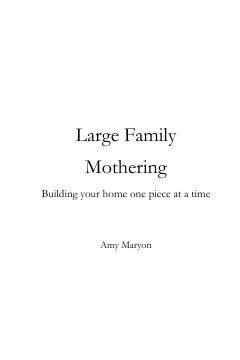

LFKo'p farzandli onalar uchun uy xo'jaligini samarali boshqarish va oilaviy tartib bo'yicha qo'llanma.
Ushbu kitob ko'p farzandli onalar uchun uy xo'jaligini samarali boshqarish, kundalik tartibni yo'lga qo'yish va oilaviy hayotni muvozanatda saqlash bo'yicha amaliy maslahatlarni o'z ichiga oladi. Muallif uy ishlarini tashkil etish, byudjetni tejash va farzandlar tarbiyasida yuzaga keladigan qiyinchiliklarni yengib o'tish bo'yicha o'z tajribasi bilan o'rtoqlashadi.